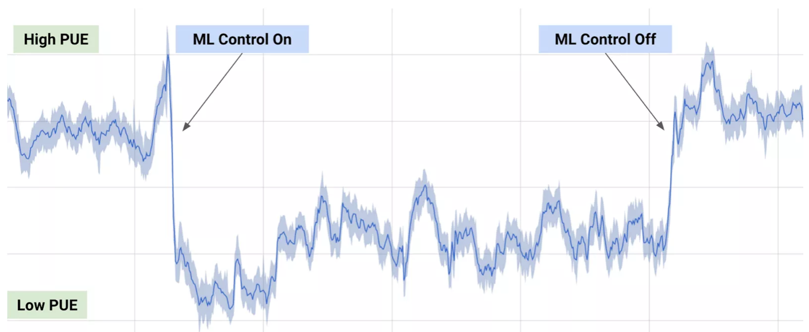
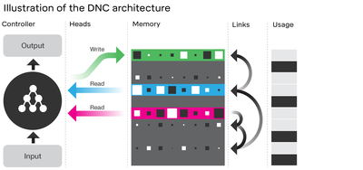
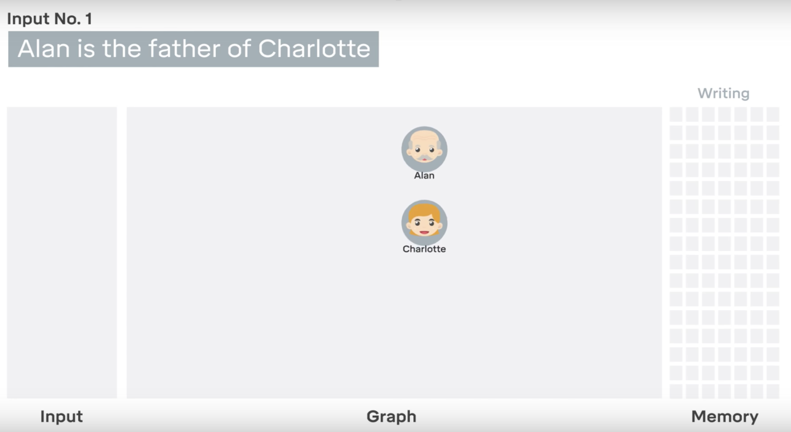
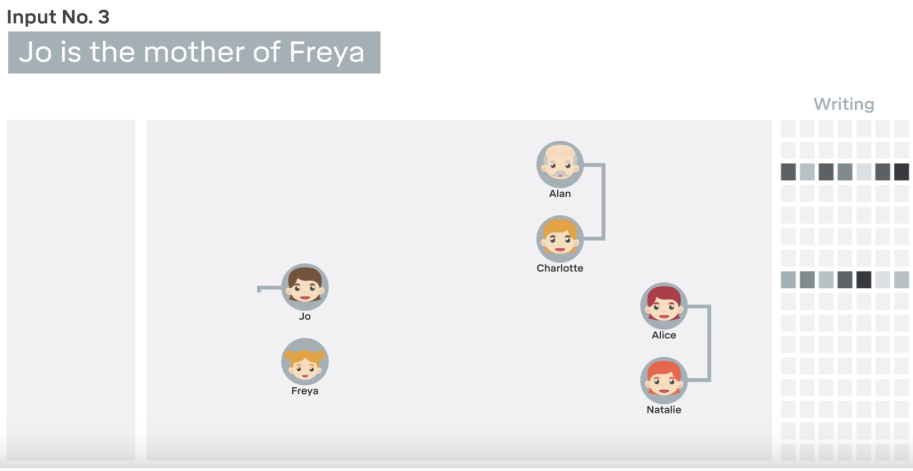

Moving towards A General Purpose A.I
Right now in 2017 its fair to say machine learning A.I. is arguable the hottest topic in the world of technology and computing. Some of the biggest companies to the most innovative start ups are investing heavily in A.I and already are seeing the benefits, take this typical example - google have been able to reduce the amount of energy their data centres consume by enabling deep mind A.I (Neural Nets), to manage power flow - by being predictive rather than reactive to demand.

To be clear these new A.I can do more than manage power.. A LOT MORE. Unlike previous tailored algorithms, new breed A.I. are not limited to niche tasks, adoption is rapidly spreading in manufacturing, medicine, research, finance and banking. Even if technological progress was to run to a complete halt today, the current machine learning A.Is that are being to roll out, will have seismic effects around the globe and prove disruptive in all fields - and that is putting it lightly.
Andrew Ng, professor at Stanford University and chief scientist at Baidu Research has said “A.I is the new electricity”, but to dial back the hype (a little) consider the following.
“Around 15 years ago there were vast lasting viral marketing campaign targeted companies to 'get online' - this represented the transformation of internet adoption. History will repeat this with A.I. & neural networks and will occur within 10 years”
Neural Networks represent the most recent block added to the A.I pyramid, and are responsible for driving both the renewed almost psychotic like hype in A.I as well as solving problems that have either eluded specialists for decades or were considered impossible.
Yet whilst Neural Networks (NNs) are arguably the pinnacle of A.I. progress, they are only good at learning and mastering a certain field. Such as self driving cars, chat bots and predicting the weather. We are still a long way away from Artificial General Intelligence (AGI) - that is being able to apply learning gained in one subject to another completely different subject. If a computer is able to learn how to talk to a human like Siri, drive a car independently and then use these learnings to say teach someone verbally how to drive a car - this would represent the holy grail in machine learning.






Installing the required Software
Composer
$ mv composer.phar /usr/local/bin/composerN
RewriteEngine on
RewriteCond %{REQUEST_FILENAME} !-d
RewriteCond %{REQUEST_FILENAME} !-f
RewriteRule . index.php [L]
Adam McMurchie 23/May/2017